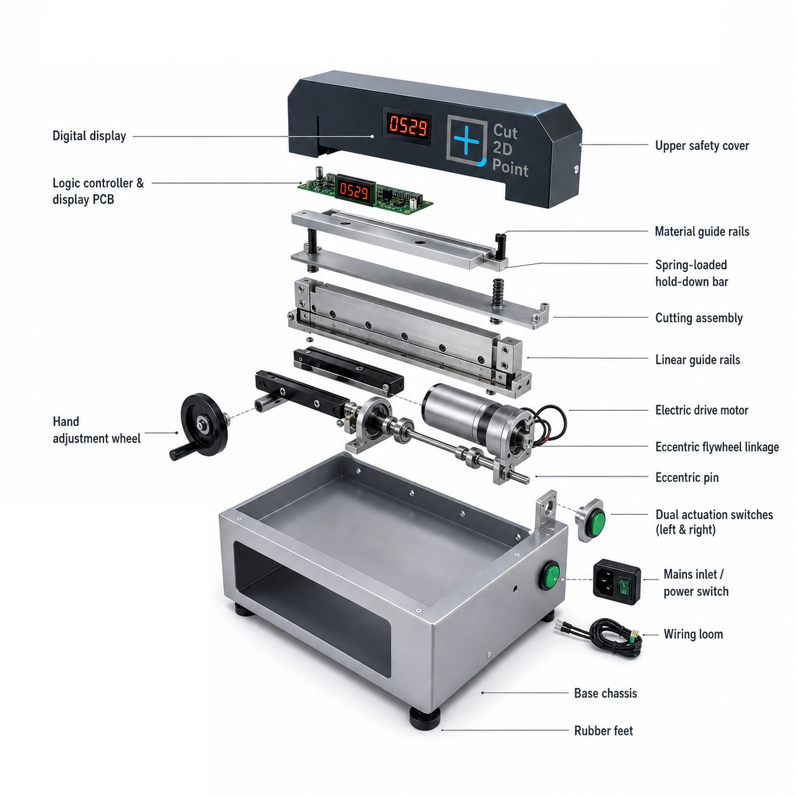

The Electric Shear combines automatic cycling with manual control. Load material, press the foot pedal, and let the machine handle the precise cut. Optional back gauge positions stock for repeatable geometry across unlimited cuts.
Built for sign shops, fabricators, and printers running multi-shift operations. The electric motor eliminates fatigue and increases throughput without sacrificing cut quality.
The Electric Shear (Model 32) is a compact, energy-efficient cutting system designed for print shops, sign makers, and fabricators who need repeatable cuts without fatigue. The digital stroke counter display allows precise job tracking and preset cycle management.
The Model 32 is optimized for:
The Electric Shear integrates with our precision back gauge system and works with our full line of interchangeable blade profiles for specialized cutting tasks.
Available on request: motorized back gauge options and production-line integration packages.
See our Corner Blades page for specialty cutting profiles.
